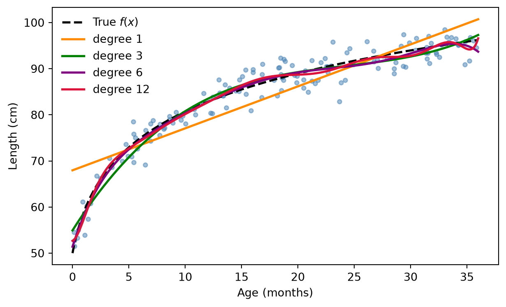
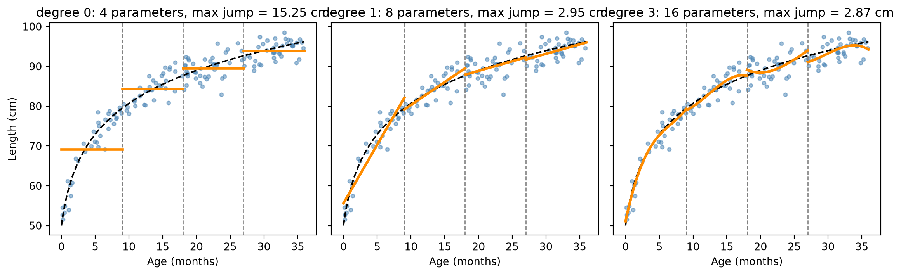
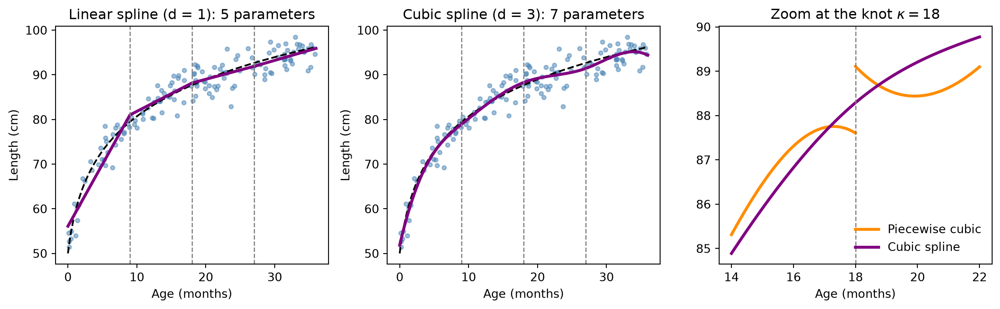
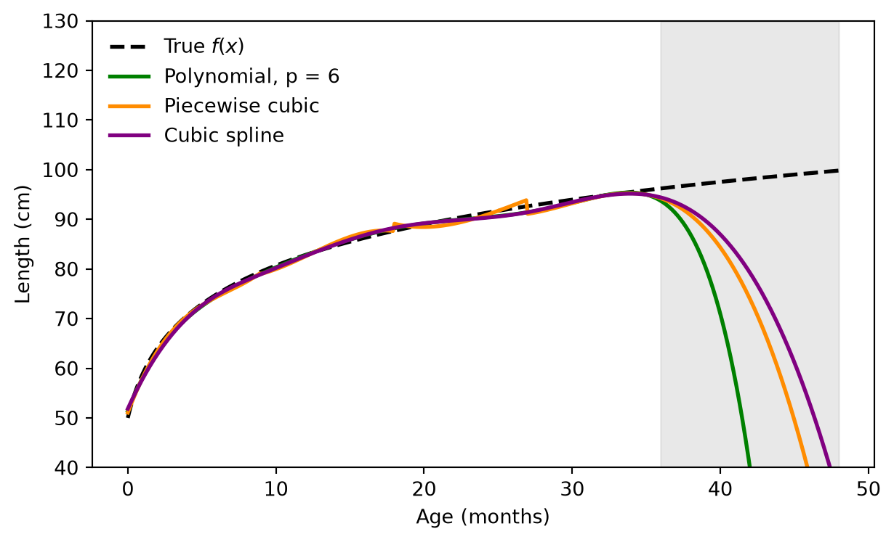

import numpy as np
import pandas as pd
import matplotlib.pyplot as plt
# Same simulated data as the straight-line figure (same seed, so identical values)
rng = np.random.default_rng(7)
n = 150
age = rng.uniform(0, 36, n)
def f_true(a):
return 50 + 12.8 * np.log1p(a) # true average length (unknown in practice)
length_cm = f_true(age) + rng.normal(0, 2.5, n)
X_MAX = 36.0 # used to rescale age to [0, 1]
age_plot = np.linspace(0, 36, 361) # fine grid for drawing curves
def fit_ols(Phi_fn, x, y):
"""Fit y = Phi(x) beta by least squares. Returns beta-hat and a predictor function."""
beta, *_ = np.linalg.lstsq(Phi_fn(x), y, rcond=None)
return beta, (lambda a: Phi_fn(a) @ beta)7 Explainer: Three Basis Expansions on the Growth Data
The previous section listed three kinds of basis expansions in words. Here we make each one precise and fit all three to the same infant growth data from Figure 6.1, so that any difference you see comes from the basis and not from the data. For each approach we do three things: (1) write the mathematical model, (2) implement it in Python, and (3) walk through the key lines of the code.
All three approaches fit the same model from the Basis Expansion section,
\[ Y = \Phi\boldsymbol\beta + \boldsymbol\varepsilon, \qquad \hat{\boldsymbol\beta} = (\Phi'\Phi)^{-1}\Phi'Y, \]
and differ only in how the columns of \(\Phi\) are built from age \(x\).
7.0.0.1 Setup: the data and two helper functions
Key parts of the code
Phi_fnis a function that turns ages into the design matrix \(\Phi\). Passing the basis around as a function is the whole idea of this section: the fitting code is written once, and each approach only supplies a differentPhi_fn.np.linalg.lstsq(Phi, y)solves \(\min_{\boldsymbol\beta}\|Y - \Phi\boldsymbol\beta\|^2\). It returns the same \(\hat{\boldsymbol\beta}\) as the formula \((\Phi'\Phi)^{-1}\Phi'Y\) but never forms \(\Phi'\Phi\) explicitly, which is numerically safer (see the conditioning remark below).fit_olsreturns a closurelambda a: Phi_fn(a) @ beta, so we can predict at new ages (a smooth plotting grid, or ages outside the data) with the same basis.
7.0.0.2 Approach 1: Polynomials
Mathematical model. Take \(b_j(x) = x^j\) for \(j = 0, 1, \dots, p\):
\[ f(x) = \sum_{j=0}^{p} \beta_j\, x^j, \qquad \Phi = \begin{bmatrix} 1 & x_1 & x_1^2 & \cdots & x_1^p \\ \vdots & \vdots & \vdots & & \vdots \\ 1 & x_n & x_n^2 & \cdots & x_n^p \end{bmatrix}_{n \times (p+1)} \]
The model has \(p+1\) parameters (degrees of freedom). It is a global model: the effect of one coefficient on the curve is
\[ \frac{\partial f(x)}{\partial \beta_j} = x^j \neq 0 \quad \text{for every } x > 0, \]
so changing any \(\beta_j\) moves the curve at every age, and the data at one end of the age range help determine the fit at the other end.
Implementation. We fit degrees \(p = 1, 3, 6, 12\).
def poly_basis(p):
def Phi(a):
z = np.asarray(a) / X_MAX # rescale age to [0, 1]
return np.column_stack([z**j for j in range(p + 1)])
return Phi
# Why rescale? Compare how well-conditioned the design matrix is for p = 6
raw = np.column_stack([age**j for j in range(7)])
print(f"condition number, raw age : {np.linalg.cond(raw):,.0f}")
print(f"condition number, age / 36 : {np.linalg.cond(poly_basis(6)(age)):,.0f}")
fig, ax = plt.subplots(figsize=(6.5, 4))
ax.scatter(age, length_cm, s=14, color="steelblue", alpha=0.5)
ax.plot(age_plot, f_true(age_plot), "k--", lw=2, label="True $f(x)$")
for p, col in zip([1, 3, 6, 12], ["darkorange", "green", "purple", "crimson"]):
_, f_hat = fit_ols(poly_basis(p), age, length_cm)
ax.plot(age_plot, f_hat(age_plot), color=col, lw=2, label=f"degree {p}")
ax.set(xlabel="Age (months)", ylabel="Length (cm)")
ax.legend(frameon=False)
plt.tight_layout()
plt.show()condition number, raw age : 4,646,740,870
condition number, age / 36 : 22,857
Key parts of the code
z = a / X_MAXrescales age from \([0, 36]\) to \([0, 1]\) before taking powers. Without it, \(x^6\) reaches about \(2\times10^9\) while the intercept column is all ones, so the columns of \(\Phi\) differ in size by many orders of magnitude and are almost collinear. The printed condition number (the ratio of the largest to the smallest singular value of \(\Phi\)) measures this; a huge value means \(\Phi'\Phi\) is nearly singular and the computed \(\hat{\boldsymbol\beta}\) loses accuracy. Rescaling does not change the family of curves, only the numerical behavior.[z**j for j in range(p + 1)]is the basis expansion itself: one column per basis function \(b_j\).np.column_stackassembles them into \(\Phi\).- The loop refits the same model class with a different \(p\). Increasing \(p\) adds flexibility, but each new column \(z^j\) is nonzero over the whole range.
7.0.0.3 Approach 2: Piecewise polynomials
Mathematical model. Choose \(K\) knots \(\kappa_1 < \cdots < \kappa_K\). They cut the age axis into \(K+1\) regions \(R_0 = [0, \kappa_1)\), \(R_1 = [\kappa_1, \kappa_2)\), \(\dots\), \(R_K = [\kappa_K, 36]\). Fit a separate polynomial of degree \(d\) in each region using indicator functions:
\[ b_{r,j}(x) = \mathbf{1}\{x \in R_r\}\; x^j, \qquad f(x) = \sum_{r=0}^{K}\sum_{j=0}^{d} \beta_{r,j}\; \mathbf{1}\{x \in R_r\}\; x^j . \]
This has \((K+1)(d+1)\) parameters. Two facts follow directly from the construction.
- It is local, and the fit decouples. Each child belongs to exactly one region, so each row of \(\Phi\) has nonzeros only in that region’s block of columns. If we sort the children by region, \(\Phi\) is block diagonal and so is \(\Phi'\Phi\). Least squares then splits into \(K+1\) separate regressions, \(\hat{\boldsymbol\beta}_r = (\Phi_r'\Phi_r)^{-1}\Phi_r'Y_r\), using only the children in region \(r\). For \(d = 0\) this is simply \(\hat\beta_{r,0} = \bar y_r\), the average length in region \(r\).
- Nothing forces the pieces to meet. The jump at knot \(\kappa_r\) is \[ \Delta_r = \lim_{x \downarrow \kappa_r} f(x) - \lim_{x \uparrow \kappa_r} f(x), \] and the least squares fit has no reason to make \(\Delta_r = 0\).
Implementation. Knots at 9, 18, and 27 months, so \(K = 3\) and four regions. We fit \(d = 0, 1, 3\).
KNOTS = np.array([9.0, 18.0, 27.0])
def piecewise_basis(d):
def Phi(a):
a = np.asarray(a)
region = np.searchsorted(KNOTS, a, side="right") # region index 0..K for each age
z = a / X_MAX
cols = []
for r in range(len(KNOTS) + 1):
in_r = (region == r).astype(float) # indicator 1{x in R_r}
for j in range(d + 1):
cols.append(in_r * z**j)
return np.column_stack(cols)
return Phi
def max_jump(f_hat, eps=1e-7):
"""Largest gap between the curve just left and just right of any knot."""
return max(abs(f_hat(np.array([k + eps]))[0] - f_hat(np.array([k - eps]))[0])
for k in KNOTS)
fig, axes = plt.subplots(1, 3, figsize=(12, 3.8), sharey=True)
for ax, d in zip(axes, [0, 1, 3]):
_, f_hat = fit_ols(piecewise_basis(d), age, length_cm)
ax.scatter(age, length_cm, s=12, color="steelblue", alpha=0.5)
ax.plot(age_plot, f_true(age_plot), "k--", lw=1.5)
for k in KNOTS:
ax.axvline(k, color="gray", ls="--", lw=1)
# draw each region separately so the jumps are not joined by a line
edges = np.concatenate([[0], KNOTS, [36]])
for lo, hi in zip(edges[:-1], edges[1:]):
g = np.linspace(lo, hi - 1e-9, 80)
ax.plot(g, f_hat(g), color="darkorange", lw=2.5)
ax.set(title=f"degree {d}: {4 * (d + 1)} parameters, max jump = {max_jump(f_hat):.2f} cm",
xlabel="Age (months)")
axes[0].set_ylabel("Length (cm)")
plt.tight_layout()
plt.show()
Key parts of the code
np.searchsorted(KNOTS, a, side="right")returns, for each age, the number of knots at or below it. That number is the region index \(r\), andside="right"puts an age exactly equal to a knot into the region on its right, matching \(R_r = [\kappa_r, \kappa_{r+1})\).in_r * z**jimplements \(\mathbf{1}\{x \in R_r\}\,x^j\). Multiplying by the 0/1 indicator zeros the column outside region \(r\), which is exactly what makes \(\Phi\) block diagonal. You can confirm this by runningnp.round(piecewise_basis(1)(np.sort(age)), 2)and looking at the pattern of nonzeros.max_jumpevaluates the fitted curve a hair to the left and right of each knot (\(\kappa \pm 10^{-7}\)) and takes the biggest gap, a numerical estimate of \(\max_r|\Delta_r|\). It is the number shown in each panel title.- The plotting loop draws each region separately. If we drew one line through the whole grid, matplotlib would connect the two sides of each jump and hide the discontinuity.
7.0.0.4 Approach 3: Splines (truncated power basis)
Mathematical model. A spline keeps the pieces of Approach 2 but forces them to join smoothly. One convenient basis that builds this in automatically is the truncated power basis. For degree \(d\) and knots \(\kappa_1, \dots, \kappa_K\),
\[ f(x) = \sum_{j=0}^{d} \beta_j\, x^j \;+\; \sum_{k=1}^{K} \beta_{d+k}\,\big[(x - \kappa_k)^+\big]^d, \qquad (u)^+ = \max(u, 0). \]
This has \(K + d + 1\) parameters. Why is the result smooth? The hinge function \(h(x) = [(x-\kappa)^+]^d\) is zero to the left of \(\kappa\) and equals \((x-\kappa)^d\) to the right. Differentiating \(m < d\) times gives
\[ h^{(m)}(x) = \frac{d!}{(d-m)!}\,\big[(x-\kappa)^+\big]^{d-m}, \]
which is \(0\) at \(x = \kappa\) from both sides, so \(h, h', \dots, h^{(d-1)}\) are all continuous at the knot. Only the \(d\)-th derivative jumps, by exactly \(d!\). Therefore the jump in \(f^{(d)}\) at knot \(\kappa_k\) is \(d!\,\beta_{d+k}\), and \(\beta_{d+k} = 0\) means “no change at this knot”.
Counting check. Approach 2 has \((K+1)(d+1)\) parameters. Requiring \(f, f', \dots, f^{(d-1)}\) to be continuous imposes \(d\) constraints at each of the \(K\) knots, so \[ (K+1)(d+1) - dK = K + d + 1, \] which matches. A spline is a piecewise polynomial with the matching constraints built in.
Implementation. Same knots, \(d = 1\) (linear spline) and \(d = 3\) (cubic spline).
def spline_basis(d):
zk = KNOTS / X_MAX
def Phi(a):
z = np.asarray(a) / X_MAX
cols = [z**j for j in range(d + 1)] # global polynomial part
cols += [np.where(z > k, (z - k)**d, 0.0) for k in zk] # one hinge per knot
return np.column_stack(cols)
return Phi
_, f_lin = fit_ols(spline_basis(1), age, length_cm)
_, f_cub = fit_ols(spline_basis(3), age, length_cm)
_, f_pw3 = fit_ols(piecewise_basis(3), age, length_cm)
fig, axes = plt.subplots(1, 3, figsize=(12, 3.8))
for ax, f_hat, ttl, d in [(axes[0], f_lin, "Linear spline (d = 1)", 1),
(axes[1], f_cub, "Cubic spline (d = 3)", 3)]:
ax.scatter(age, length_cm, s=12, color="steelblue", alpha=0.5)
ax.plot(age_plot, f_true(age_plot), "k--", lw=1.5)
ax.plot(age_plot, f_hat(age_plot), color="purple", lw=2.5)
for k in KNOTS:
ax.axvline(k, color="gray", ls="--", lw=1)
ax.set(title=f"{ttl}: {len(KNOTS) + d + 1} parameters",
xlabel="Age (months)", ylabel="Length (cm)")
# zoom on the knot at 18 months
zl, zr = np.linspace(14, 18 - 1e-9, 60), np.linspace(18, 22, 60)
ax = axes[2]
ax.plot(zl, f_pw3(zl), color="darkorange", lw=2.5, label="Piecewise cubic")
ax.plot(zr, f_pw3(zr), color="darkorange", lw=2.5)
g = np.linspace(14, 22, 120)
ax.plot(g, f_cub(g), color="purple", lw=2.5, label="Cubic spline")
ax.axvline(18, color="gray", ls="--", lw=1)
ax.set(title="Zoom at the knot $\\kappa = 18$", xlabel="Age (months)")
ax.legend(frameon=False)
plt.tight_layout()
plt.show()
print(f"max jump, piecewise cubic: {max_jump(f_pw3):.3f} cm")
print(f"max jump, cubic spline : {max_jump(f_cub):.6f} cm")
max jump, piecewise cubic: 2.866 cm
max jump, cubic spline : 0.000000 cmKey parts of the code
cols = [z**j ...]is the ordinary polynomial part \(\sum_{j\le d}\beta_j x^j\). It is shared by all regions.np.where(z > k, (z - k)**d, 0.0)is the hinge \([(x-\kappa_k)^+]^d\): zero before the knot, \((x-\kappa_k)^d\) after it. Note the knots are rescaled tozk = KNOTS / X_MAXso they live on the same scale asz.- The only difference from
piecewise_basisis the basis, so the samefit_olsis reused unchanged. The printedmax jumpfor the spline is zero up to rounding, because continuity is a property of the basis and not something the fit has to learn. In the zoom panel the piecewise cubic (orange) breaks at 18 months while the cubic spline (purple) passes straight through. - A linear spline is continuous but has a kink at each knot (its slope changes); the cubic spline has continuous slope and curvature, so no kink is visible by eye.
7.0.0.5 Side-by-side comparison
We now compare the approaches on four criteria: flexibility (parameters), accuracy against the true curve, continuity at the knots, and what happens when the data are changed at one end of the age range.
models = {
"Polynomial, p = 3": poly_basis(3),
"Polynomial, p = 6": poly_basis(6),
"Piecewise cubic": piecewise_basis(3),
"Linear spline": spline_basis(1),
"Cubic spline": spline_basis(3),
}
rows = []
for name, Phi in models.items():
_, f_hat = fit_ols(Phi, age, length_cm)
rows.append({
"Model": name,
"Parameters": Phi(age).shape[1],
"RSS": np.sum((length_cm - f_hat(age))**2),
"RMSE vs truth": np.sqrt(np.mean((f_hat(age_plot) - f_true(age_plot))**2)),
"Max jump at knots (cm)": max_jump(f_hat),
})
pd.DataFrame(rows).set_index("Model").round(3)| Parameters | RSS | RMSE vs truth | Max jump at knots (cm) | |
|---|---|---|---|---|
| Model | ||||
| Polynomial, p = 3 | 4 | 942.072 | 1.193 | 0.000 |
| Polynomial, p = 6 | 7 | 817.517 | 0.671 | 0.000 |
| Piecewise cubic | 16 | 780.596 | 0.741 | 2.866 |
| Linear spline | 5 | 1017.978 | 1.352 | 0.000 |
| Cubic spline | 7 | 819.691 | 0.688 | 0.000 |
Two lessons from the table. First, a low-degree polynomial or a spline both capture the bend in the growth curve far better than the straight line (the straight line has an RMSE of about 3.8 cm on this data), and with a similar number of parameters they are about equally accurate inside the observed age range. Second, only the piecewise fit has a nonzero jump, and it pays for that with many more parameters.
The differences show up when the data change or when we leave the observed range.
age_ext = np.linspace(0, 48, 481)
fig, ax = plt.subplots(figsize=(6.5, 4))
ax.axvspan(36, 48, color="lightgray", alpha=0.5)
ax.plot(age_ext, f_true(age_ext), "k--", lw=2, label="True $f(x)$")
for name, Phi, col in [("Polynomial, p = 6", poly_basis(6), "green"),
("Piecewise cubic", piecewise_basis(3), "darkorange"),
("Cubic spline", spline_basis(3), "purple")]:
_, f_hat = fit_ols(Phi, age, length_cm)
ax.plot(age_ext, f_hat(age_ext), color=col, lw=2, label=name)
ax.set(xlabel="Age (months)", ylabel="Length (cm)", ylim=(40, 130))
ax.legend(frameon=False)
plt.tight_layout()
plt.show()
Now the perturbation experiment: raise the recorded length by 8 cm for every child older than 30 months (as if the older children were measured differently), refit, and record how much the fitted curve moves at each age.
y_shift = length_cm + 8 * (age > 30) # change the data at the old-age end only
bands = [(0, 6), (6, 12), (12, 18), (18, 24), (24, 30), (30, 36)]
out = {}
for name, Phi in [("Polynomial, p = 6", poly_basis(6)),
("Piecewise cubic", piecewise_basis(3)),
("Cubic spline", spline_basis(3))]:
_, f_before = fit_ols(Phi, age, length_cm)
_, f_after = fit_ols(Phi, age, y_shift)
change = np.abs(f_after(age_plot) - f_before(age_plot))
out[name] = [change[(age_plot >= lo) & (age_plot <= hi)].max() for lo, hi in bands]
pd.DataFrame(out, index=[f"{lo}-{hi} mo" for lo, hi in bands]).round(2)| Polynomial, p = 6 | Piecewise cubic | Cubic spline | |
|---|---|---|---|
| 0-6 mo | 0.89 | 0.00 | 0.33 |
| 6-12 mo | 0.45 | 0.00 | 0.38 |
| 12-18 mo | 0.49 | 0.00 | 0.53 |
| 18-24 mo | 0.81 | 0.00 | 0.99 |
| 24-30 mo | 3.95 | 3.47 | 4.23 |
| 30-36 mo | 8.78 | 9.17 | 8.50 |
- The piecewise cubic does not move at all below 27 months, where the shifted last region begins: each region only listens to its own children. This is what “local” means in the strict sense.
- The polynomial moves at every age, including the youngest, because every coefficient affects the whole curve.
- The cubic spline also moves in the younger bands, though by less than it moves near the edited region. In the truncated power basis a hinge term is nonzero everywhere to the right of its knot, so the basis itself is not local; the spline is locally flexible (a knot lets the curve bend at one place) rather than strictly local. Bases with compact support (B-splines) make the locality sharper, and adding knots localizes the fit further.
NoteTake-aways
| Polynomial | Piecewise polynomial | Spline | |
|---|---|---|---|
| Parameters | \(p+1\) | \((K+1)(d+1)\) | \(K+d+1\) |
| Smooth at knots? | no knots; smooth everywhere | no, jumps at knots | yes, up to derivative \(d-1\) |
| Influence of one coefficient | whole curve | one region | everything right of its knot (hinge basis) |
| Extrapolation beyond the data | diverges | diverges | still diverges (motivates restricted cubic splines) |
The last row is the bridge to the rest of the chapter. A cubic spline fixes the jumps and uses fewer parameters than the piecewise fit, but its tails still misbehave outside the data, which the restricted (natural) cubic spline addresses by forcing the tails to be straight lines. The next sections derive each spline step by step.